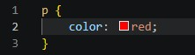
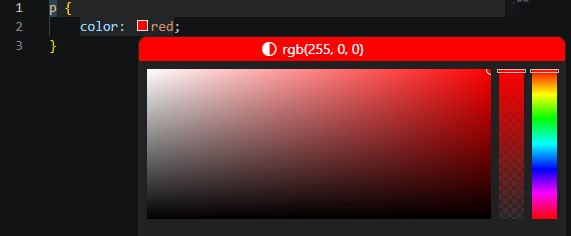

აქამდე ჩვენი საიტი მხოლოდ შავ-თეთრი იყო. დროა, მას ფერები და სიცოცხლე შევძინოთ! HTML-სა და CSS-ში ფერების დასამატებლად ძირითადად ვიყენებთ ორ თვისებას: ტექსტის ფერს და ფონის ფერს. (ფონის ფერს მომავალ გაკვეთილში ისწავლით)
ტექსტის ფერის შესაცვლელად ვიყენებთ თვისებას სახელად color.
გადადით CSS ფაილზე რომელიც გაქვთ დაკავშირებული ამ HTML ფაილთან:
p {
color: blue; პარაგრაფები ლურჯია!
}როგორ ვწერთ ფერებს კოდში?
კომპიუტერს ფერები შეგვიძლია რამდენიმე გზით ავუხსნათ:
- სიტყვიერად (Names): ყველაზე მარტივი გზა. მაგალითად:
red,blue,black. ბრაუზერი ცნობს 140-მდე ფერის სახელს. - HEX კოდით: ეს არის 6-ნიშნა კოდი პროფესიონალებისთვის, რომელიც იწყება
#ნიშნით. მაგალითად#ff0000არის ზუსტი წითელი ფერი. HEX კოდები საშუალებას გვაძლევს მილიონობით უნიკალური ფერი მივიღოთ!
HEX კოდის დამახსოვრება საჭირო არ არის. ამისათვის VS Code დაგეხმარებათ:
-
გადადით CSS ფაილზე და შექმენით სიტყვიერი ფერის კოდი მაგალითად წითელი:

-
შემდეგ გადაუსვით მაუსი წითელ პატარა ოთხკუთხედს და შეგეძლებათ თქვენი შესაფერისი HEX კოდის შექმნა.
